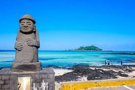

제주도는 대한민국 남서쪽에 위치한 섬으로, 한라산과 같은 화산성 산악지대와 아름다운 해안선을 자랑합니다. 이곳은 그 독특한 자연경관과 함께 다채로운 문화와 역사적 유적을 갖추고 있습니다. 제주 특산물인 감귤과 청보리는 유명하며, 제주 방언과 어촌 문화도 특색 있습니다. 성산일출봉과 우도 같은 명소는 매년 많은 관광객들이 찾으며, 해양 스포츠와 테마 파크 등 다채로운 레저 활동이 가능합니다. 제주도는 자연과 문화가 공존하는 매력적인 관광지로, 국내외 관광객들에게 인기가 높습니다.
제주도의 날씨는 일본 해류의 영향을 받아 다른 대한민국 지역과는 다소 차이가 있습니다. 일반적으로 제주도는 비교적 온화한 기후를 가지고 있으며, 겨울에는 서늘하고 여름에는 더운 편입니다. 봄과 가을은 기온이 쾌적하고 날씨가 안정적이어서 여행하기 좋은 시기로 평가됩니다. 그러나 강수량은 상대적으로 많은 편이며, 특히 장마철에는 비가 오는 날이 많습니다. 또한, 제주도는 바다에서부터 뜨거운 공기가 차가운 바닷바람과 충돌하여 갑자기 날씨가 변할 수 있는 특성도 가지고 있습니다. 따라서 여행을 계획할 때는 날씨 변화에 대비할 수 있는 준비가 필요합니다.
